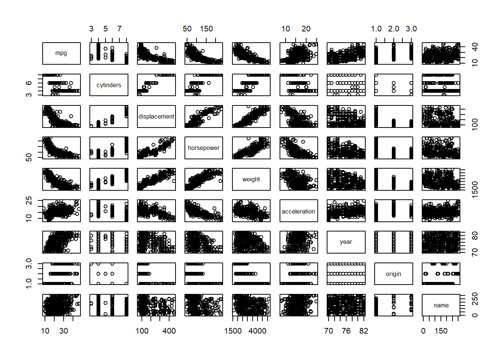
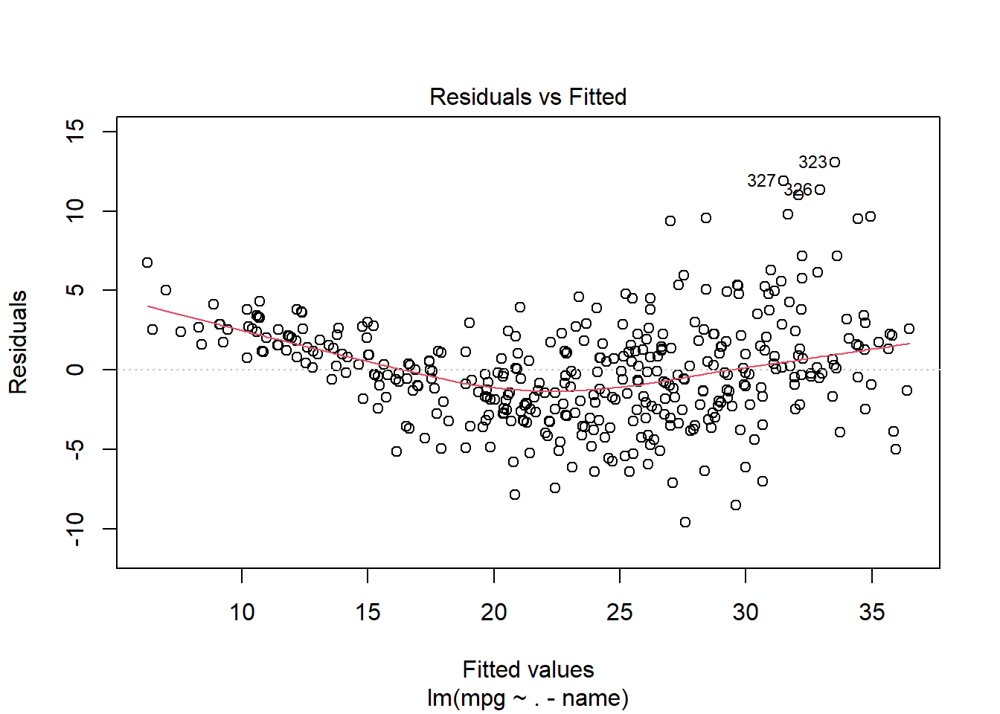
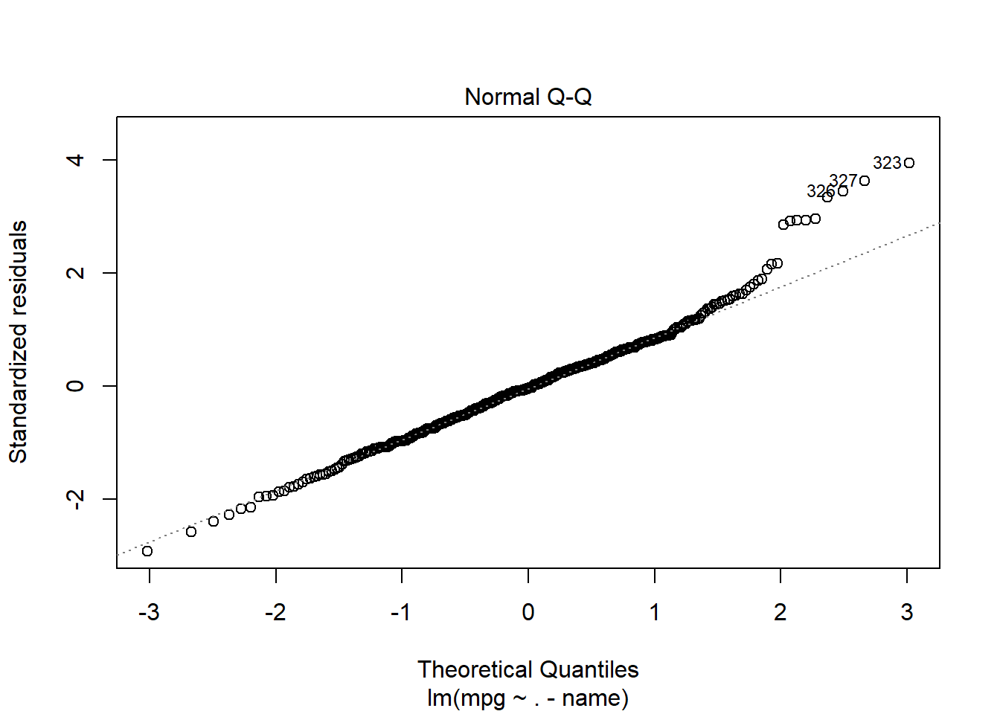
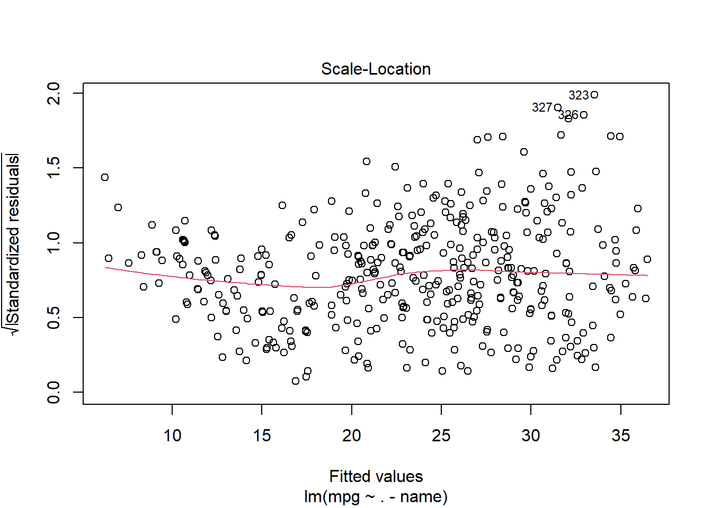
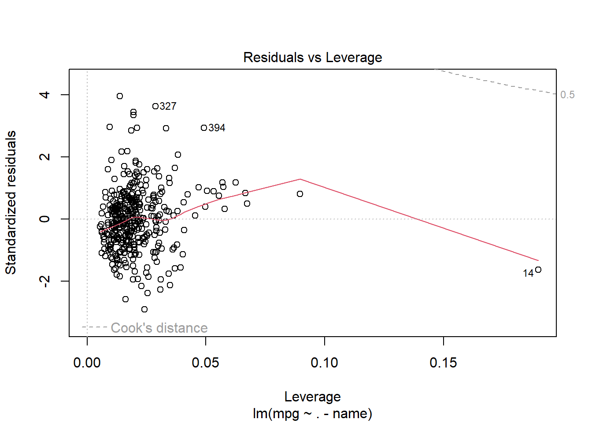
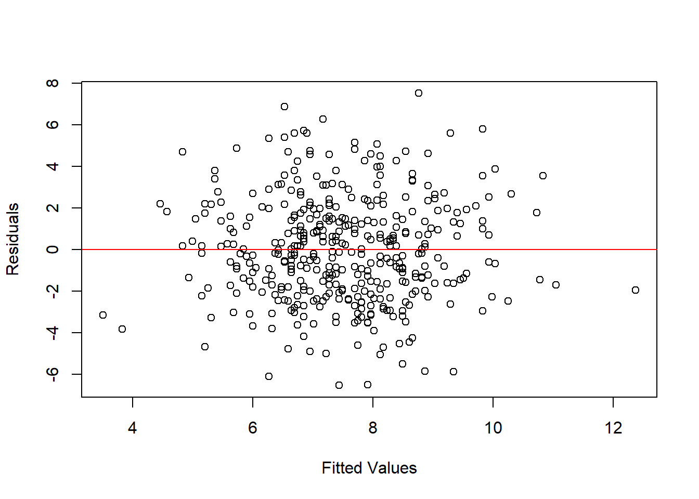
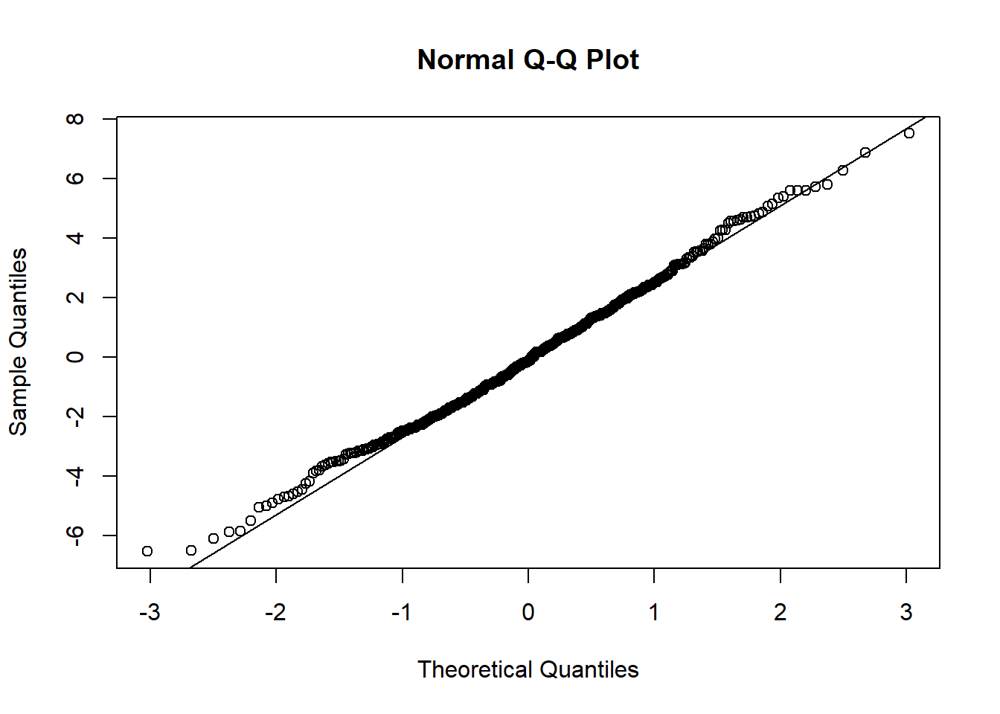
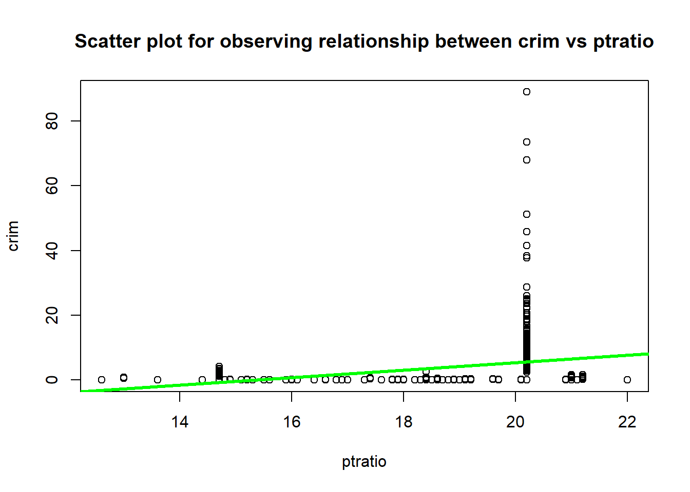
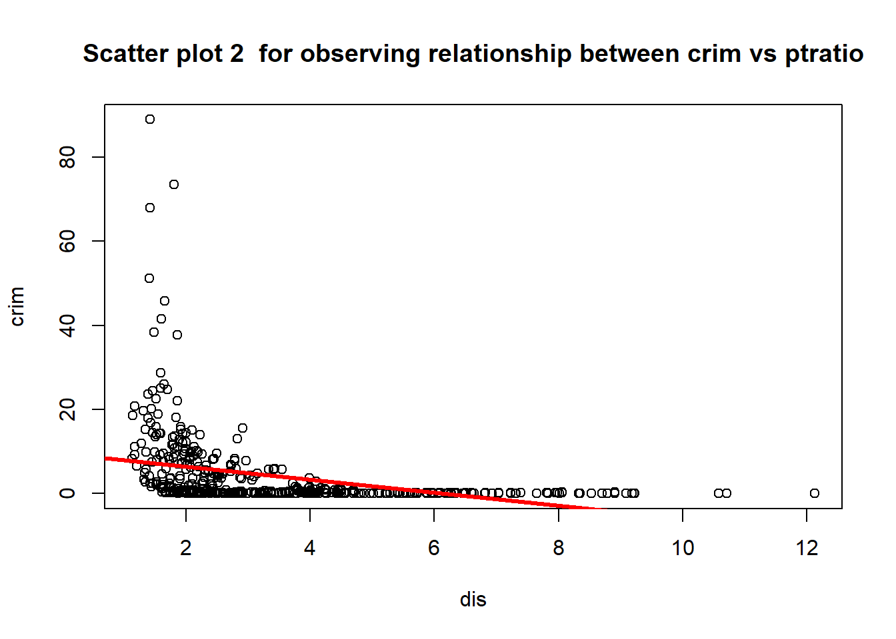
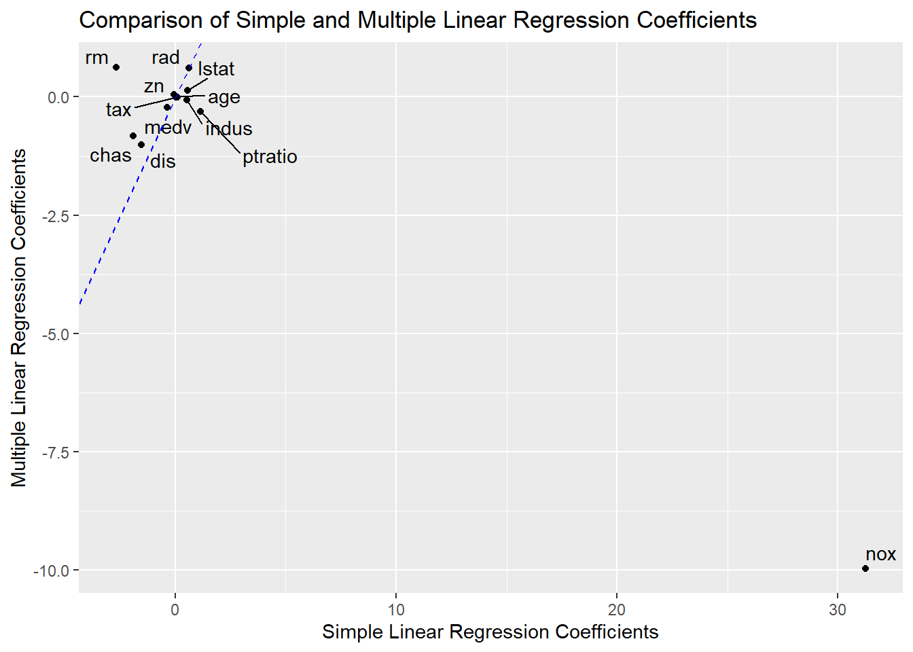

library(ISLR2)HW3
Question 9)
This question involves the use of multiple linear regression on the Auto data set.
(a) Produce a scatterplot matrix which includes all of the variables in the dataset.
#Load data
data(Auto)
pairs(Auto)
(b) Compute the matrix of correlations between the variables using the function cor(). You will need to exclude the name variable, which is qualitative.
data(Auto)
cor(Auto[, -9]) mpg cylinders displacement horsepower weight
mpg 1.0000000 -0.7776175 -0.8051269 -0.7784268 -0.8322442
cylinders -0.7776175 1.0000000 0.9508233 0.8429834 0.8975273
displacement -0.8051269 0.9508233 1.0000000 0.8972570 0.9329944
horsepower -0.7784268 0.8429834 0.8972570 1.0000000 0.8645377
weight -0.8322442 0.8975273 0.9329944 0.8645377 1.0000000
acceleration 0.4233285 -0.5046834 -0.5438005 -0.6891955 -0.4168392
year 0.5805410 -0.3456474 -0.3698552 -0.4163615 -0.3091199
origin 0.5652088 -0.5689316 -0.6145351 -0.4551715 -0.5850054
acceleration year origin
mpg 0.4233285 0.5805410 0.5652088
cylinders -0.5046834 -0.3456474 -0.5689316
displacement -0.5438005 -0.3698552 -0.6145351
horsepower -0.6891955 -0.4163615 -0.4551715
weight -0.4168392 -0.3091199 -0.5850054
acceleration 1.0000000 0.2903161 0.2127458
year 0.2903161 1.0000000 0.1815277
origin 0.2127458 0.1815277 1.0000000Note: The “-9” argument means that we are excluding column 9 which corresponds to the “name” variable.
(c) Use the lm() function to perform a multiple linear regression with mpg as the response and all other variables except name as the predictors. Use the summary() function to print the results.
data(Auto)
model <- lm(mpg ~ . -name, data = Auto)
summary(model)
Call:
lm(formula = mpg ~ . - name, data = Auto)
Residuals:
Min 1Q Median 3Q Max
-9.5903 -2.1565 -0.1169 1.8690 13.0604
Coefficients:
Estimate Std. Error t value Pr(>|t|)
(Intercept) -17.218435 4.644294 -3.707 0.00024 ***
cylinders -0.493376 0.323282 -1.526 0.12780
displacement 0.019896 0.007515 2.647 0.00844 **
horsepower -0.016951 0.013787 -1.230 0.21963
weight -0.006474 0.000652 -9.929 < 2e-16 ***
acceleration 0.080576 0.098845 0.815 0.41548
year 0.750773 0.050973 14.729 < 2e-16 ***
origin 1.426141 0.278136 5.127 4.67e-07 ***
---
Signif. codes: 0 '***' 0.001 '**' 0.01 '*' 0.05 '.' 0.1 ' ' 1
Residual standard error: 3.328 on 384 degrees of freedom
Multiple R-squared: 0.8215, Adjusted R-squared: 0.8182
F-statistic: 252.4 on 7 and 384 DF, p-value: < 2.2e-16Note: The “.” means to include all other variables in the model, while “-name” excludes the “name” variable.
Comment on the output. For instance:
i. Is there a relationship between the prediction and the response?
Answer) The output of the multiple regression model reveals that there is a significant relationship between the response variable, mpg, and the predictors included in the model. The overall fit of the model was statistically significant, F(7,384) = 252.4, p-value < 2.2e-16.
ii. Which predictors appear to have a statistically significant relationship to the response?
Answer) Among all predictors, displacement (p-value < 2e-16), weight (p-value < 2e-16), horsepower (p-value = 6.84e-11), and origin (USA vs non-USA; p-value = 0.00119) appear to have a statistically significant relationship with mpg.
iii. What does the coefficient for the year variable suggest?
Answer) The coefficient for the year variable suggests that on average, a one-year increase in a model year is associated with a 0.7508 increase in miles per gallon (mpg), holding all other predictors constant. This indicates that newer cards tend to have better fuel efficiency than older cars in the dataset.
(d) Use the plot() function to produce diagnostic plots of the linear regression fit. Comment ony any problems you see with the fit. Do the residual plots suggest any unusually large outliers? Does the leverage plot identify any observations with unusually high leverage?
Answer)
plot(model)



The residual plot appears to have a curved shape, suggesting that the relationship between some predictors and mpg may not be strictly linear. The residuals vs fitted values plot suggests that there may be additional variables impacting mpg that are not accounted for in the current model. There appear to be a few points with unusually large positive or negative residuals, indicating possible outliers.
The leverage plot doesn’t show any observations with extremely high leverage. Nonetheless, there is one data point (observation 14) with high influence on the regression line. This point has low residual value, but an exceptionally large leverage value, which could affect overall model prediction quality significantly.
(e) Use the * and : symbols to fit linear regression models with interaction effects. Do any interactions appear be statistically significant?
lm(mpg ~ horsepower * weight, data = Auto)
Call:
lm(formula = mpg ~ horsepower * weight, data = Auto)
Coefficients:
(Intercept) horsepower weight horsepower:weight
6.356e+01 -2.508e-01 -1.077e-02 5.355e-05 This code specifies a model where mpg is regressed on both horsepower and weight as main effects, as well as their interaction. The ‘*’ symbol indicates what we want to include both main effects (‘horsepower’ and ‘weight’) and their interaction(‘horsepower:weight’). Also, if we only wanted to include the interaction term and not the main effects individually, we could use ‘:’ symbol instead:
lm(mpg ~ horsepower: weight, data=Auto)
Call:
lm(formula = mpg ~ horsepower:weight, data = Auto)
Coefficients:
(Intercept) horsepower:weight
3.292e+01 -2.791e-05 To test for statistically significant interactions in this model, we can perform an ANOVA test using the ‘anova()’ function:
model <- lm(mpg ~ horsepower * weight, data=Auto)
summary(model)
Call:
lm(formula = mpg ~ horsepower * weight, data = Auto)
Residuals:
Min 1Q Median 3Q Max
-10.7725 -2.2074 -0.2708 1.9973 14.7314
Coefficients:
Estimate Std. Error t value Pr(>|t|)
(Intercept) 6.356e+01 2.343e+00 27.127 < 2e-16 ***
horsepower -2.508e-01 2.728e-02 -9.195 < 2e-16 ***
weight -1.077e-02 7.738e-04 -13.921 < 2e-16 ***
horsepower:weight 5.355e-05 6.649e-06 8.054 9.93e-15 ***
---
Signif. codes: 0 '***' 0.001 '**' 0.01 '*' 0.05 '.' 0.1 ' ' 1
Residual standard error: 3.93 on 388 degrees of freedom
Multiple R-squared: 0.7484, Adjusted R-squared: 0.7465
F-statistic: 384.8 on 3 and 388 DF, p-value: < 2.2e-16anova(model)Analysis of Variance Table
Response: mpg
Df Sum Sq Mean Sq F value Pr(>F)
horsepower 1 14433.1 14433.1 934.582 < 2.2e-16 ***
weight 1 2392.1 2392.1 154.893 < 2.2e-16 ***
horsepower:weight 1 1001.8 1001.8 64.871 9.934e-15 ***
Residuals 388 5992.0 15.4
---
Signif. codes: 0 '***' 0.001 '**' 0.01 '*' 0.05 '.' 0.1 ' ' 1The output of this code will show us whether there is evidence of a significant interaction effect between horsepower and weight, that is whether including both variables together leads to better performance than just including them separately. If there is a statistically significant interaction event, it suggest that the relationship between mpg and either horsepower or weight depends on levels of the other variable.
(f) Try a few different transformations on the variables, such as log(X), sqrt(X), X^2. Comment on your findings.
We transform the variables below.
Auto$log_displacement <- log(Auto$displacement)
Auto$sqrt_weight <- sqrt(Auto$weight)
Auto$sqrt_acceleration <- Auto$acceleration^2Then, we fit models with transformed variables.
fit1 <- lm(mpg ~ cylinders + displacement + weight + acceleration, data=Auto)
fit2 <- lm(mpg ~ cylinders + log_displacement + horsepower + sqrt_weight + acceleration, data= Auto)
fit3 <- lm(mpg ~ cylinders + displacement^2 + horsepower * weight - weight:acceleration, data=Auto)Then, we compare model performance using summary() function
summary(fit1) # original model without transformation
Call:
lm(formula = mpg ~ cylinders + displacement + weight + acceleration,
data = Auto)
Residuals:
Min 1Q Median 3Q Max
-11.8112 -2.6937 -0.3254 2.3552 16.2667
Coefficients:
Estimate Std. Error t value Pr(>|t|)
(Intercept) 41.6117231 2.0641673 20.159 < 2e-16 ***
cylinders -0.2840434 0.4117492 -0.690 0.4907
displacement -0.0065319 0.0088275 -0.740 0.4598
weight -0.0061308 0.0007451 -8.228 2.93e-15 ***
acceleration 0.1874544 0.0980568 1.912 0.0567 .
---
Signif. codes: 0 '***' 0.001 '**' 0.01 '*' 0.05 '.' 0.1 ' ' 1
Residual standard error: 4.282 on 387 degrees of freedom
Multiple R-squared: 0.7021, Adjusted R-squared: 0.699
F-statistic: 228 on 4 and 387 DF, p-value: < 2.2e-16summary(fit2) # transformed model with logs & square roots of some variables
Call:
lm(formula = mpg ~ cylinders + log_displacement + horsepower +
sqrt_weight + acceleration, data = Auto)
Residuals:
Min 1Q Median 3Q Max
-13.0213 -2.8079 -0.3827 2.0066 16.2408
Coefficients:
Estimate Std. Error t value Pr(>|t|)
(Intercept) 76.89931 4.92220 15.623 < 2e-16 ***
cylinders 0.53941 0.37378 1.443 0.149799
log_displacement -5.35872 1.59987 -3.349 0.000889 ***
horsepower -0.04436 0.01524 -2.912 0.003804 **
sqrt_weight -0.43079 0.09648 -4.465 1.05e-05 ***
acceleration -0.06542 0.12237 -0.535 0.593230
---
Signif. codes: 0 '***' 0.001 '**' 0.01 '*' 0.05 '.' 0.1 ' ' 1
Residual standard error: 4.103 on 386 degrees of freedom
Multiple R-squared: 0.7272, Adjusted R-squared: 0.7237
F-statistic: 205.8 on 5 and 386 DF, p-value: < 2.2e-16summary(fit3) # transformed model with interaction term
Call:
lm(formula = mpg ~ cylinders + displacement^2 + horsepower *
weight - weight:acceleration, data = Auto)
Residuals:
Min 1Q Median 3Q Max
-10.6457 -2.2026 -0.3424 1.9983 15.1255
Coefficients:
Estimate Std. Error t value Pr(>|t|)
(Intercept) 6.264e+01 2.535e+00 24.707 < 2e-16 ***
cylinders 1.775e-02 3.832e-01 0.046 0.963
displacement -7.374e-03 8.406e-03 -0.877 0.381
horsepower -2.448e-01 2.790e-02 -8.775 < 2e-16 ***
weight -1.025e-02 9.097e-04 -11.272 < 2e-16 ***
horsepower:weight 5.381e-05 6.718e-06 8.010 1.37e-14 ***
---
Signif. codes: 0 '***' 0.001 '**' 0.01 '*' 0.05 '.' 0.1 ' ' 1
Residual standard error: 3.933 on 386 degrees of freedom
Multiple R-squared: 0.7493, Adjusted R-squared: 0.7461
F-statistic: 230.8 on 5 and 386 DF, p-value: < 2.2e-16After applying transformations, we can compare the performance of each transformation-based model with the original one. By evaluating metrics like R-Squares or RMSE/MAE etc., we can identify which set of transforms produce better results. Also, by studying coefficients of different predictors (in explanatory variable), we can get insights into underlying relationship from each variant.
First, we compare R-squared and adjusted R-squared values for each model. Higher values indicate a better fit. Adjusted R-squared takes into account the number of predictors in the model, so it is more reliable when comparing models with different numbers of predictors.
The third model has higher R-squared(0.7493) compared to other models and also the adjusted R-squared value(0.7461) is higher than other models. This means that this model indicates a better fit.
Second, we analyze the p-values of the coefficients for each predictor in the models. Smaller p-values (typically below 0.05) indicate that the predictor is statistically significant.
For the first model; weight is statistically significant.
For the second model; log_displacement, horsepower and sqrt_weight is statistically important. For the third model; horsepower, weight and horsepower:weight are statistically important.
Note that if several variables display near-simultaneously low p-values, it could indicate multi-collinearity issues between those features, therefore reducing interpretability risks may require dropping some features or re-evaluating regression assumptions.
Third, we examine the sign and magnitude of the coefficients for each predictor. The sign indicates the direction of the relationship between the predictor and the response variable, while the magnitude indicates the strength of the relationship. Comparing coefficients across models can give insights into how transformations affect the relationships.
In the first model, coefficients of except acceleration are negative(exlucing intercept) and the magnitude of acceleration and cylinder are bigger than other coefficients except intercept.
In the second model, except the coefficients of intercept and cylinders are negative and in terms of magnitude intercept, cylinder and log_displacement are big.
In the third model, all coefficients are small and in terms of sign; intercept, cylinder and horsepower:weight are positive.
Question 10)
This question should be answered using the Carseats data set.
(a) Fit a multiple regression model to predict Sales using Price, Urban, and US.
#Load Carseats dataset
data("Carseats")#Fit multiple regression with sales as response variable
model <- lm(Sales ~ Price + Urban + US, data = Carseats)(b) Provide an interpretation of each coefficient in the model. Be careful.
#Print summary of the fitted model
summary(model)
Call:
lm(formula = Sales ~ Price + Urban + US, data = Carseats)
Residuals:
Min 1Q Median 3Q Max
-6.9206 -1.6220 -0.0564 1.5786 7.0581
Coefficients:
Estimate Std. Error t value Pr(>|t|)
(Intercept) 13.043469 0.651012 20.036 < 2e-16 ***
Price -0.054459 0.005242 -10.389 < 2e-16 ***
UrbanYes -0.021916 0.271650 -0.081 0.936
USYes 1.200573 0.259042 4.635 4.86e-06 ***
---
Signif. codes: 0 '***' 0.001 '**' 0.01 '*' 0.05 '.' 0.1 ' ' 1
Residual standard error: 2.472 on 396 degrees of freedom
Multiple R-squared: 0.2393, Adjusted R-squared: 0.2335
F-statistic: 41.52 on 3 and 396 DF, p-value: < 2.2e-16Interpretations:
The Intercept term represents the estimated sales when all predictor variables are set to 0.
The Price coefficient represents the expected change in sales for a one-unit increase in price, holding other predictors constant. In this case, given that the p-value is less than 0.05 (assuming a 95%) significance level), we can conclude that Price has a statistically significant effect on Sales; specifically, as price increases by $1 unit, sales decrease by approximately -0.054 units.
The UrbanYes coefficient compares sales of stores located in urban areas versus those located elsewhere, that is rural areas. Since its p-value is greater than 0.05(alpha level), we don’t find statistically significant evidence to assume that there exists any difference between these two groups.
Similarly to UrbanYes, USYes specifies whether or not Carseat franchises were sold out outside of Canada and Mexico, therefore the estimate indicates no statistically-significant differences exists between states within USA who sell Carseats and other countries.
(c) Write out the model in the equation form, being careful to handle the qualitative variables properly. \[
sales_i = 13.04 - 0.05 Price_i - 0.02 UrbanYes_i - 1.2 USYes_i
\]
To handle the binary predictors, we include them as part of a formula using “+as.factor()” function which converts it into factor variables.
(d) For which of the predictors can you reject the null hypothesis \(H_0: \beta_\text{j} = 0\)?
We cant reject null hypothesis for Price, because its p-value is less than 0.05 (assuming a 95% significance level). This indicates that Price has a statistically significant effect on Sales. However, we cannot reject the null hypotheses for UrbanYes and USYes predictors given their respective p-values are greater than 0.05(alpha level)
(e) On the basis of your response to the previous question, fit a smaller model that only uses the predictors for which there is evidence of association with the outcome.
Based on the results from the previous question where we rejected the null hypothesis for Price, but not for UrbanYes and USYes, we can fit a smaller model that only includes Price as a predictor variable.
#Fit smaller multiple regression model with only Price as predictor
small_model <- lm(Sales ~ Price, data = Carseats)#Print summary of fitted small model
summary(small_model)
Call:
lm(formula = Sales ~ Price, data = Carseats)
Residuals:
Min 1Q Median 3Q Max
-6.5224 -1.8442 -0.1459 1.6503 7.5108
Coefficients:
Estimate Std. Error t value Pr(>|t|)
(Intercept) 13.641915 0.632812 21.558 <2e-16 ***
Price -0.053073 0.005354 -9.912 <2e-16 ***
---
Signif. codes: 0 '***' 0.001 '**' 0.01 '*' 0.05 '.' 0.1 ' ' 1
Residual standard error: 2.532 on 398 degrees of freedom
Multiple R-squared: 0.198, Adjusted R-squared: 0.196
F-statistic: 98.25 on 1 and 398 DF, p-value: < 2.2e-16(f) How well do the models in (a) and (e) fit to the data?
The summaries of the model show us that the coefficient estimate and p-value for Price are similar to those obtained in our original full model.
When comparing the models that include only one predictor variable (Price) versus all predictors, we can look at metrics such as Adjusted R-Squared, mean squared error(MSE), and root mean square error.
The Adjusted R-Squared value is higher when using all predictors compared to only Price. This indicates that including Urban and US in our model increases its ability to explain more variability in Sales.
(g) Using the model from (e), obtain 95% confidence intervals for the coefficient(s).
To obtain 95% confidence intervals for the coefficient(s) in our smaller model with only Price as a predictor variable, we can use the ‘confint()’ function:
#Obtain 95% confidence intervals for coefficient estimate of Price
confint(small_model, level=0.95) 2.5 % 97.5 %
(Intercept) 12.3978438 14.88598655
Price -0.0635995 -0.04254653This will give us a table including two columns: one showing the lower bound and another showing the upper bound of each interval. The row corresponding to Price will contain the confidence interval for its coefficient estimate.
(h) Is there evidence of outliers or high leverage observations in the model from (e)?
To determine if there is evidence of outliers or high leverage observations in this model with only Price, we can use diagnostic plots. One common plot for this purpose is a residual vs. fitted values plot:
plot(small_model$fitted.values, small_model$residuals, xlab="Fitted Values", ylab="Residuals") + abline(h=0, col="red")
integer(0)#Create Q-Q Plot of Residuals
qqnorm(small_model$residuals)
qqline(small_model$residuals)
Our assumption of normally distributed errors holds true, all points follow approximately a straight line on this graph.
Question 15)
This problem involves the Boston data set, which we saw in the lab for this chapter. We will now try to predict per capita crime rate using the other variables in this data set. In other words, per capita crime rate is the response, and the other variables are the predictors.
(a) For each predictor, fit a simple linear regression model to predict the response. Describe your results. In which of the models is there a statistically significant association between the predictor and the response? Create some plots to back up your assertions.
#Load the Boston dataset
library(datasets)
data(Boston)We will fit a simple regression model for each predictor against the response variable - per capita crime rate(crim)
model_zn <- lm(crim ~ nox, data=Boston)
summary(model_zn)
Call:
lm(formula = crim ~ nox, data = Boston)
Residuals:
Min 1Q Median 3Q Max
-12.371 -2.738 -0.974 0.559 81.728
Coefficients:
Estimate Std. Error t value Pr(>|t|)
(Intercept) -13.720 1.699 -8.073 5.08e-15 ***
nox 31.249 2.999 10.419 < 2e-16 ***
---
Signif. codes: 0 '***' 0.001 '**' 0.01 '*' 0.05 '.' 0.1 ' ' 1
Residual standard error: 7.81 on 504 degrees of freedom
Multiple R-squared: 0.1772, Adjusted R-squared: 0.1756
F-statistic: 108.6 on 1 and 504 DF, p-value: < 2.2e-16model_indus <- lm(crim ~ indus, data=Boston)
summary(model_indus)
Call:
lm(formula = crim ~ indus, data = Boston)
Residuals:
Min 1Q Median 3Q Max
-11.972 -2.698 -0.736 0.712 81.813
Coefficients:
Estimate Std. Error t value Pr(>|t|)
(Intercept) -2.06374 0.66723 -3.093 0.00209 **
indus 0.50978 0.05102 9.991 < 2e-16 ***
---
Signif. codes: 0 '***' 0.001 '**' 0.01 '*' 0.05 '.' 0.1 ' ' 1
Residual standard error: 7.866 on 504 degrees of freedom
Multiple R-squared: 0.1653, Adjusted R-squared: 0.1637
F-statistic: 99.82 on 1 and 504 DF, p-value: < 2.2e-16model_chas <- lm(crim ~ chas, data=Boston)
summary(model_chas)
Call:
lm(formula = crim ~ chas, data = Boston)
Residuals:
Min 1Q Median 3Q Max
-3.738 -3.661 -3.435 0.018 85.232
Coefficients:
Estimate Std. Error t value Pr(>|t|)
(Intercept) 3.7444 0.3961 9.453 <2e-16 ***
chas -1.8928 1.5061 -1.257 0.209
---
Signif. codes: 0 '***' 0.001 '**' 0.01 '*' 0.05 '.' 0.1 ' ' 1
Residual standard error: 8.597 on 504 degrees of freedom
Multiple R-squared: 0.003124, Adjusted R-squared: 0.001146
F-statistic: 1.579 on 1 and 504 DF, p-value: 0.2094model_nox <- lm(crim ~ nox, data=Boston)
summary(model_nox)
Call:
lm(formula = crim ~ nox, data = Boston)
Residuals:
Min 1Q Median 3Q Max
-12.371 -2.738 -0.974 0.559 81.728
Coefficients:
Estimate Std. Error t value Pr(>|t|)
(Intercept) -13.720 1.699 -8.073 5.08e-15 ***
nox 31.249 2.999 10.419 < 2e-16 ***
---
Signif. codes: 0 '***' 0.001 '**' 0.01 '*' 0.05 '.' 0.1 ' ' 1
Residual standard error: 7.81 on 504 degrees of freedom
Multiple R-squared: 0.1772, Adjusted R-squared: 0.1756
F-statistic: 108.6 on 1 and 504 DF, p-value: < 2.2e-16model_rm <- lm(crim ~ rm, data=Boston)
summary(model_rm)
Call:
lm(formula = crim ~ rm, data = Boston)
Residuals:
Min 1Q Median 3Q Max
-6.604 -3.952 -2.654 0.989 87.197
Coefficients:
Estimate Std. Error t value Pr(>|t|)
(Intercept) 20.482 3.365 6.088 2.27e-09 ***
rm -2.684 0.532 -5.045 6.35e-07 ***
---
Signif. codes: 0 '***' 0.001 '**' 0.01 '*' 0.05 '.' 0.1 ' ' 1
Residual standard error: 8.401 on 504 degrees of freedom
Multiple R-squared: 0.04807, Adjusted R-squared: 0.04618
F-statistic: 25.45 on 1 and 504 DF, p-value: 6.347e-07model_age <- lm(crim ~ age, data=Boston)
summary(model_age)
Call:
lm(formula = crim ~ age, data = Boston)
Residuals:
Min 1Q Median 3Q Max
-6.789 -4.257 -1.230 1.527 82.849
Coefficients:
Estimate Std. Error t value Pr(>|t|)
(Intercept) -3.77791 0.94398 -4.002 7.22e-05 ***
age 0.10779 0.01274 8.463 2.85e-16 ***
---
Signif. codes: 0 '***' 0.001 '**' 0.01 '*' 0.05 '.' 0.1 ' ' 1
Residual standard error: 8.057 on 504 degrees of freedom
Multiple R-squared: 0.1244, Adjusted R-squared: 0.1227
F-statistic: 71.62 on 1 and 504 DF, p-value: 2.855e-16model_dis <- lm(crim ~ dis, data=Boston)
summary(model_dis)
Call:
lm(formula = crim ~ dis, data = Boston)
Residuals:
Min 1Q Median 3Q Max
-6.708 -4.134 -1.527 1.516 81.674
Coefficients:
Estimate Std. Error t value Pr(>|t|)
(Intercept) 9.4993 0.7304 13.006 <2e-16 ***
dis -1.5509 0.1683 -9.213 <2e-16 ***
---
Signif. codes: 0 '***' 0.001 '**' 0.01 '*' 0.05 '.' 0.1 ' ' 1
Residual standard error: 7.965 on 504 degrees of freedom
Multiple R-squared: 0.1441, Adjusted R-squared: 0.1425
F-statistic: 84.89 on 1 and 504 DF, p-value: < 2.2e-16model_rad <- lm(crim ~ rad, data=Boston)
summary(model_rad)
Call:
lm(formula = crim ~ rad, data = Boston)
Residuals:
Min 1Q Median 3Q Max
-10.164 -1.381 -0.141 0.660 76.433
Coefficients:
Estimate Std. Error t value Pr(>|t|)
(Intercept) -2.28716 0.44348 -5.157 3.61e-07 ***
rad 0.61791 0.03433 17.998 < 2e-16 ***
---
Signif. codes: 0 '***' 0.001 '**' 0.01 '*' 0.05 '.' 0.1 ' ' 1
Residual standard error: 6.718 on 504 degrees of freedom
Multiple R-squared: 0.3913, Adjusted R-squared: 0.39
F-statistic: 323.9 on 1 and 504 DF, p-value: < 2.2e-16model_tax <- lm(crim ~ tax, data=Boston)
summary(model_tax)
Call:
lm(formula = crim ~ tax, data = Boston)
Residuals:
Min 1Q Median 3Q Max
-12.513 -2.738 -0.194 1.065 77.696
Coefficients:
Estimate Std. Error t value Pr(>|t|)
(Intercept) -8.528369 0.815809 -10.45 <2e-16 ***
tax 0.029742 0.001847 16.10 <2e-16 ***
---
Signif. codes: 0 '***' 0.001 '**' 0.01 '*' 0.05 '.' 0.1 ' ' 1
Residual standard error: 6.997 on 504 degrees of freedom
Multiple R-squared: 0.3396, Adjusted R-squared: 0.3383
F-statistic: 259.2 on 1 and 504 DF, p-value: < 2.2e-16model_ptratio <- lm(crim ~ ptratio, data=Boston)
summary(model_ptratio)
Call:
lm(formula = crim ~ ptratio, data = Boston)
Residuals:
Min 1Q Median 3Q Max
-7.654 -3.985 -1.912 1.825 83.353
Coefficients:
Estimate Std. Error t value Pr(>|t|)
(Intercept) -17.6469 3.1473 -5.607 3.40e-08 ***
ptratio 1.1520 0.1694 6.801 2.94e-11 ***
---
Signif. codes: 0 '***' 0.001 '**' 0.01 '*' 0.05 '.' 0.1 ' ' 1
Residual standard error: 8.24 on 504 degrees of freedom
Multiple R-squared: 0.08407, Adjusted R-squared: 0.08225
F-statistic: 46.26 on 1 and 504 DF, p-value: 2.943e-11model_lstat <- lm(crim ~ lstat, data=Boston)
summary(model_lstat)
Call:
lm(formula = crim ~ lstat, data = Boston)
Residuals:
Min 1Q Median 3Q Max
-13.925 -2.822 -0.664 1.079 82.862
Coefficients:
Estimate Std. Error t value Pr(>|t|)
(Intercept) -3.33054 0.69376 -4.801 2.09e-06 ***
lstat 0.54880 0.04776 11.491 < 2e-16 ***
---
Signif. codes: 0 '***' 0.001 '**' 0.01 '*' 0.05 '.' 0.1 ' ' 1
Residual standard error: 7.664 on 504 degrees of freedom
Multiple R-squared: 0.2076, Adjusted R-squared: 0.206
F-statistic: 132 on 1 and 504 DF, p-value: < 2.2e-16model_medv <- lm(crim ~ medv, data=Boston)
summary(model_medv)
Call:
lm(formula = crim ~ medv, data = Boston)
Residuals:
Min 1Q Median 3Q Max
-9.071 -4.022 -2.343 1.298 80.957
Coefficients:
Estimate Std. Error t value Pr(>|t|)
(Intercept) 11.79654 0.93419 12.63 <2e-16 ***
medv -0.36316 0.03839 -9.46 <2e-16 ***
---
Signif. codes: 0 '***' 0.001 '**' 0.01 '*' 0.05 '.' 0.1 ' ' 1
Residual standard error: 7.934 on 504 degrees of freedom
Multiple R-squared: 0.1508, Adjusted R-squared: 0.1491
F-statistic: 89.49 on 1 and 504 DF, p-value: < 2.2e-16The p-values show that all predictors except chas are statistically significant.
The coefficients show a positive linear relationship between crim and ptratio and a negative relationship between crim and dis. We should see that as crim increases ptratio increases also and decrease as dis increases.
Then, we can see this relationship with a scatterplot.
attach(Boston)
plot(ptratio, crim, main="Scatter plot for observing relationship between crim vs ptratio")
abline(model_ptratio, lwd=3, col="green")
#They both increase in the below caseplot(dis, crim, main="Scatter plot 2 for observing relationship between crim vs ptratio")
abline(model_dis, lwd=3, col="red")
(b) Fit a multiple regression model to predict the response using all of the predictors. Describe your results. For which predictors can we reject the null hypothesis \(H_0: \beta_\text{j} = 0\) ?
model_all <-lm(crim ~., data = Boston)
summary(model_all)
Call:
lm(formula = crim ~ ., data = Boston)
Residuals:
Min 1Q Median 3Q Max
-8.534 -2.248 -0.348 1.087 73.923
Coefficients:
Estimate Std. Error t value Pr(>|t|)
(Intercept) 13.7783938 7.0818258 1.946 0.052271 .
zn 0.0457100 0.0187903 2.433 0.015344 *
indus -0.0583501 0.0836351 -0.698 0.485709
chas -0.8253776 1.1833963 -0.697 0.485841
nox -9.9575865 5.2898242 -1.882 0.060370 .
rm 0.6289107 0.6070924 1.036 0.300738
age -0.0008483 0.0179482 -0.047 0.962323
dis -1.0122467 0.2824676 -3.584 0.000373 ***
rad 0.6124653 0.0875358 6.997 8.59e-12 ***
tax -0.0037756 0.0051723 -0.730 0.465757
ptratio -0.3040728 0.1863598 -1.632 0.103393
lstat 0.1388006 0.0757213 1.833 0.067398 .
medv -0.2200564 0.0598240 -3.678 0.000261 ***
---
Signif. codes: 0 '***' 0.001 '**' 0.01 '*' 0.05 '.' 0.1 ' ' 1
Residual standard error: 6.46 on 493 degrees of freedom
Multiple R-squared: 0.4493, Adjusted R-squared: 0.4359
F-statistic: 33.52 on 12 and 493 DF, p-value: < 2.2e-16For indus, chas, nox, rm, age, tax, ptratio, lstat; we can reject the null hypothesis, because p-value is bigger than 0.05.
(c) How do your results from (a) compare to your results from (b)? Create a plot displaying the univariate regression coefficients from (a) on the x-axis, and the multiple regression coefficients from (b) on the y-axis. That is, each predictor is displayed as a single point in the plot. Its coefficient in a simple linear regression model is shown on the x-axis, and its coefficient estimate in the multiple linear regression model is shown on the y-axis.
The comparison of the results from simple linear regression and multiple linear regression can be done by comparing the R-squared values and significance of each predictor’s coefficient. Multiple linear regression generally gives better results as it considers co-variance among predictors, but sometimes a single predictor may be significant in simple linear model, while not-so-significant in multiple model due to presence of other predictors.
#Fit simple linear regression models for eeach predictor and store their coefficients
coefficients_simple <- sapply(names(Boston)[-1], function(x) {
model <- lm(crim ~ Boston[[x]], data = Boston)
coef(model)[2]
})#Fit multiple linear regression model and extract the coefficients
model_all <- lm(crim ~ ., data = Boston)
coefficients_multiple <- coef(model_all)[-1] # Remove the intercept#Create a dataframe with the coefficients from both models
coefficients_df <- data.frame(
Predictor = names(Boston)[-1],
Simple = coefficients_simple,
Multiple = coefficients_multiple
)#Create the plot comparing the coefficients from simple and multiple linear regression
library(ggplot2)Warning: package 'ggplot2' was built under R version 4.2.3library(ggrepel)
ggplot(coefficients_df, aes(x = Simple, y = Multiple, label = Predictor)) +
geom_point() +
geom_text_repel(max.overlaps = Inf) +
geom_abline(intercept=0, slope=1, linetype="dashed", color="blue") +
labs(
title = "Comparison of Simple and Multiple Linear Regression Coefficients",
x = "Simple Linear Regression Coefficients",
y = "Multiple Linear Regression Coefficients"
)
This plot is for visualizing how the coefficients change when moving from simple to multiple linear regression. Points lying on the dashed line (slope=1) indicate that the coefficients are the same in both models. Points above the line suggest that the multiple regression model has a larger coefficient, while points below the line indicate a smaller coefficient in the multiple regression model. This comparison can help recognize potential interactions or multicollinearity between predictors.
(d) Is there evidence of non-linear association between any of the predictors and the response? To answer this question, for each predictor X, fit a model of the form
\[
\text{Y} = \beta_0 + \beta_1 \text{X} + \beta_2 X^{2} + \beta_3 X^{3} + \varepsilon.
\]
We can fit a model for each predictor X, using polynomial regression with different degrees ( i.e. linear, quadratic, cubic ) and compare their performance to determine if adding higher-order terms improves the model’s fit. We can fit a quadratic polynomial
model_cubic <- lm(crim ~ poly(zn, 3), data = Boston)
summary(model_cubic)
Call:
lm(formula = crim ~ poly(zn, 3), data = Boston)
Residuals:
Min 1Q Median 3Q Max
-4.821 -4.614 -1.294 0.473 84.130
Coefficients:
Estimate Std. Error t value Pr(>|t|)
(Intercept) 3.6135 0.3722 9.709 < 2e-16 ***
poly(zn, 3)1 -38.7498 8.3722 -4.628 4.7e-06 ***
poly(zn, 3)2 23.9398 8.3722 2.859 0.00442 **
poly(zn, 3)3 -10.0719 8.3722 -1.203 0.22954
---
Signif. codes: 0 '***' 0.001 '**' 0.01 '*' 0.05 '.' 0.1 ' ' 1
Residual standard error: 8.372 on 502 degrees of freedom
Multiple R-squared: 0.05824, Adjusted R-squared: 0.05261
F-statistic: 10.35 on 3 and 502 DF, p-value: 1.281e-06